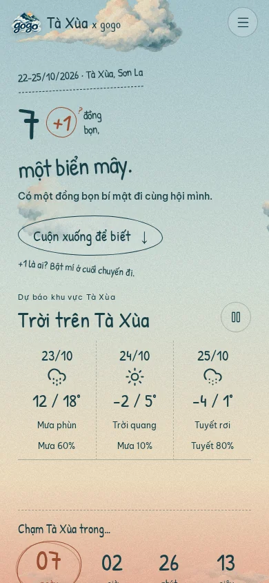
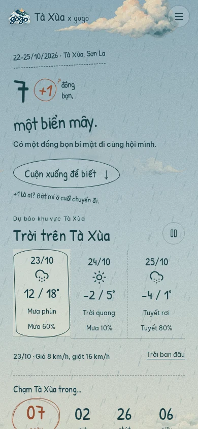
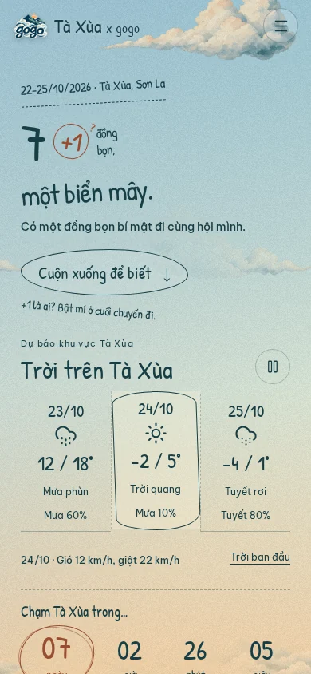
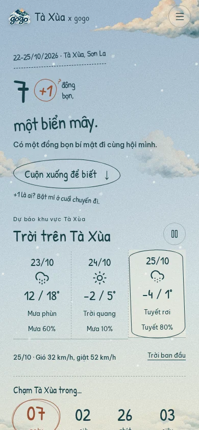
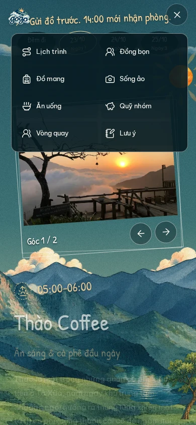
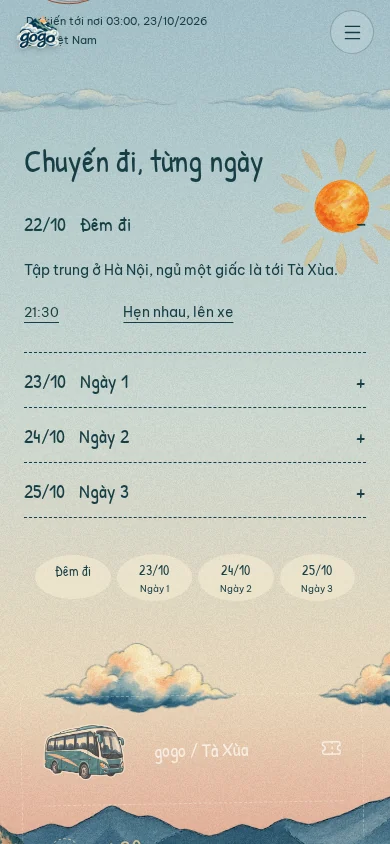
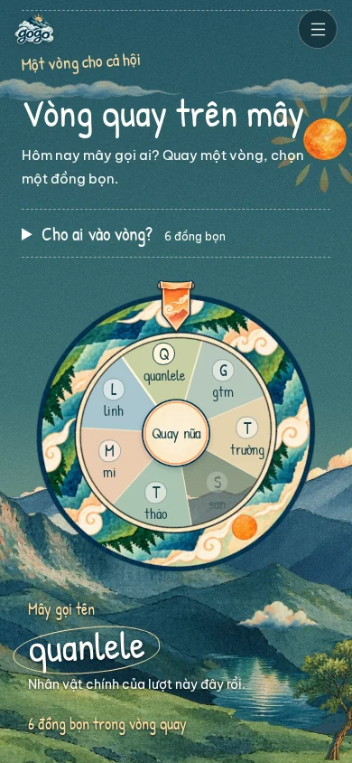
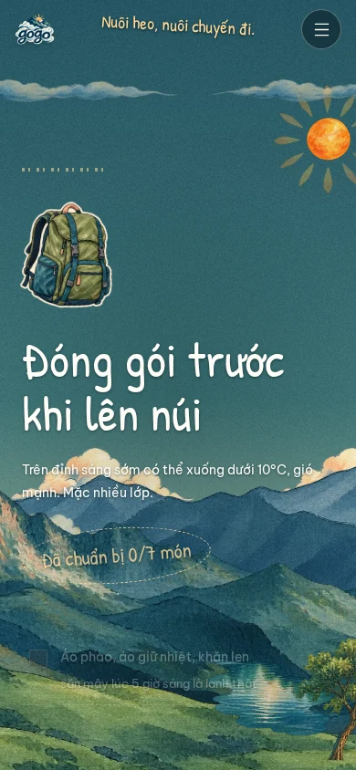
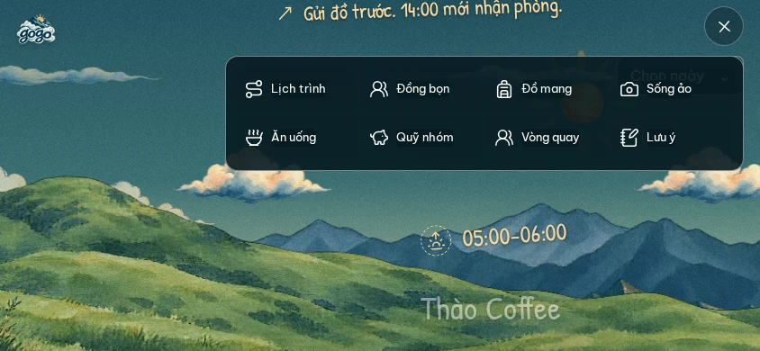
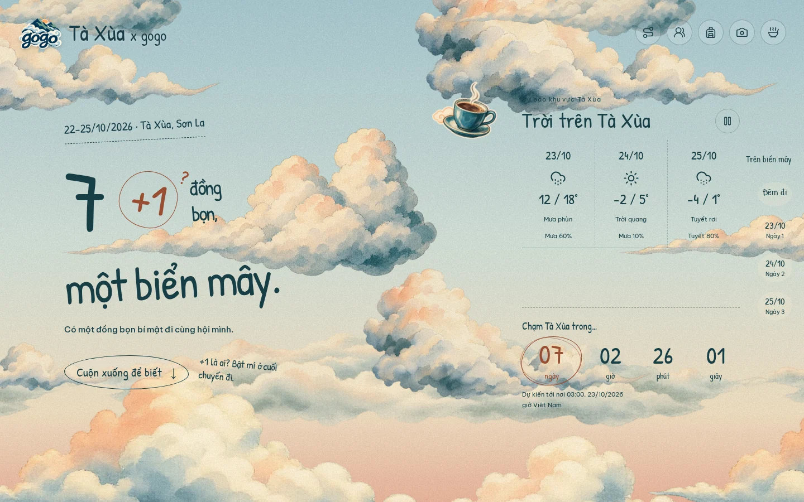
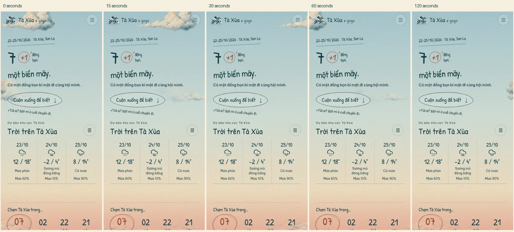
16 October 2026. Chromium emulation, including phone, short landscape, desktop and 200% root text size. Weather uses demonstration fixtures; temperatures and snow are not the live forecast.
Audit and implementation plan · Implementation and checks










